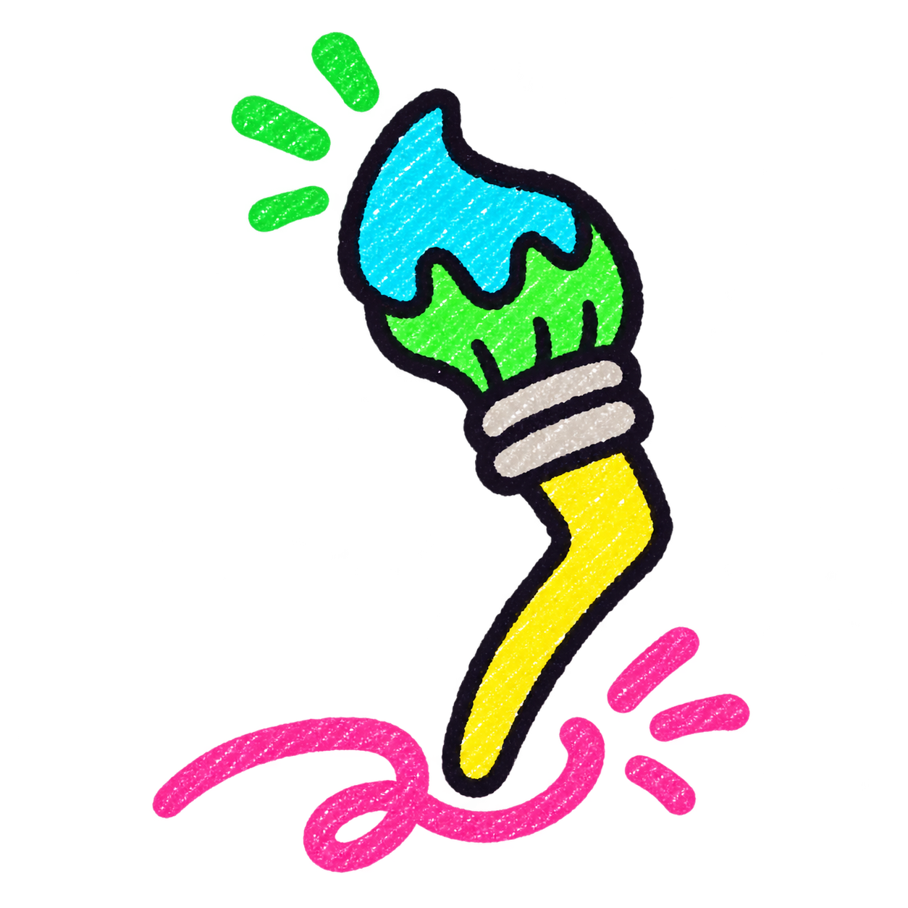

01
Red
#FF4343AN ICON WITH PERSONALITY
Four bright colors. One crooked paintbrush. A little outside the lines.

STATIC DESIGN FOUNDATIONS
A box of bright ideas. Warm color, squishy type, and lines with a little personality.
Eight saturated crayons. Lemon leads; the rest bring the personality.
#FF4343#FF8A1F#FFE83D#37D66B#27DCEB#3455FF#853BE8#FF57B5#181321#FFFFFF#F4F4F6Keep it readable. Ink on the bright colors. White on blue, purple, and ink. Paper gives the whole box room to breathe.
Chunky headlines meet a friendly, easy-to-read everyday voice.
THE BIG PERSONALITY
Stay curious.
Get a little messy.
Aa Bb Cc Dd Ee Ff Gg
0123456789 !?&
THE FRIENDLY VOICE
Good ideas start with a scribble. Round, open letters keep the little things clear, even when the colors get loud.
Aa Bb Cc Dd Ee Ff Gg
0123456789 !?&
16px20px24px32px48px64pxA six-step scale, stored in rem. Body text starts at 16px and grows with your settings.
A simple 4px rhythm keeps the playful bits grounded.
space-4space-8space-12space-16space-24space-32space-48space-64space-964–8 for close friends. 12–32 for groups. 48–96 for a little space to think.
Soft corners at every scale, from a small detail to a big idea.
12px24px32px48px9999pxA wobbly edge says “made by a person.” Keep the content itself tidy.
Uneven on purpose.
Soft in every direction.
A little emphasis.
A lot of character.
Two imperfect strokes.
One unmistakable outline.
Informal by design. Thoughtful where it matters.
Color outside
the expected.
Make it feel like opening a fresh box of crayons. A little uneven, full of possibility, and never too precious to play with.